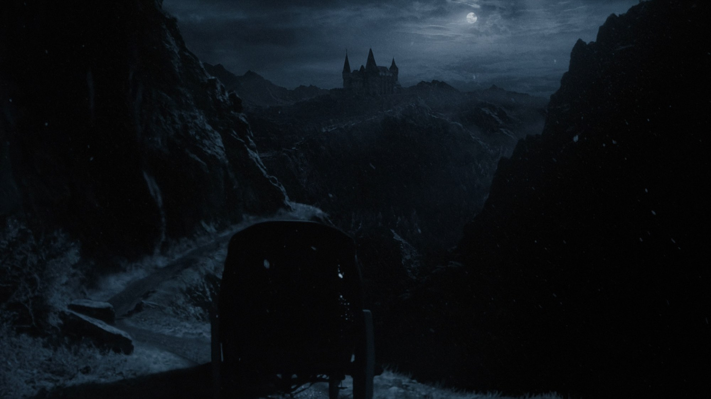
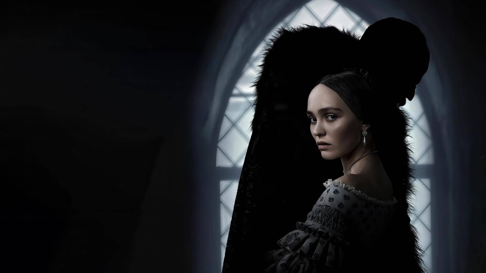
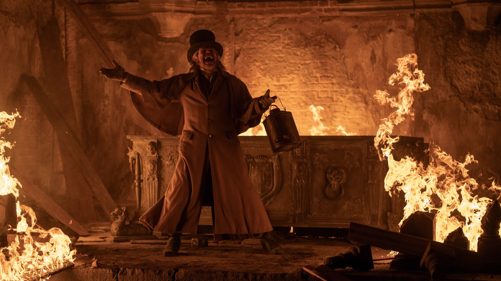

Nosferatu di Eggers: 6 curiosità dal set
Un progetto rimandato per quasi dieci anni, un vampiro che parla una lingua morta, una voce costruita con una cantante d'opera e un castello in Romania: il remake di Robert Eggers raccontato da dietro le quinte, senza svelare la trama
Nel luglio 2015 Robert Eggers annunciò che il suo secondo film sarebbe stato un Nosferatu. Le riprese sono iniziate otto anni dopo, nel febbraio 2023. In mezzo ci sono stati due altri film, un'attrice protagonista che ha lasciato il progetto, un vampiro che parla una lingua morta e un rapporto quasi artigianale con la pellicola. Il risultato, uscito in Italia il 1° gennaio 2025, è un remake del classico muto di Murnau che si regge benissimo anche da solo. Ecco sei cose da sapere prima di vederlo o rivederlo, senza anticipare nulla della trama.
Perché ci sono voluti quasi dieci anni?
Perché per Eggers non era un progetto qualsiasi. Il regista aveva già adattato la storia a teatro ai tempi del liceo, insieme a una compagna di classe, e la considerava una passione personale da portare al cinema appena possibile. L'annuncio del 2015 arrivò quando The Witch era appena uscito, ma altri film ebbero la precedenza. Nel 2017 Anya Taylor-Joy, già protagonista di The Witch, risultava legata al progetto, che negli anni cambiò più volte volto: Harry Styles fu annunciato accanto a lei e uscì nel 2021 per problemi di calendario, mentre Daniel Day-Lewis e Mads Mikkelsen furono considerati per il vampiro. Il cast definitivo fu annunciato solo dal 30 settembre 2022, con Bill Skarsgård nel ruolo di Orlok e Lily-Rose Depp in quello di Ellen. Un'attesa così lunga spiega la cura quasi maniacale dei dettagli che si vede sullo schermo.

Come si è costruita la voce di Orlok?
Senza effetti digitali. Skarsgård ha rifiutato di far abbassare la voce al computer e ha lavorato con una cantante d'opera islandese per scendere di registro, aggiungendo anche tecniche del canto di gola mongolo. Non è l'unico dettaglio sonoro insolito: nel film il conte parla un dacico ricostruito, una lingua scomparsa, mentre altri personaggi usano il rumeno e il romaní. La scelta serve a un obiettivo preciso, dare a Orlok una provenienza storica credibile invece di un generico accento da vampiro. Anche questo è un modo di rendere il film più «vecchio» di quanto sia: una creatura che sembra venire da prima della nostra storia.
Chi ha disegnato il volto del vampiro?
Il truccatore David White, che per la pelle e i tratti di Orlok ha preso spunto da Ötzi, la mummia naturale scoperta nel 1991: Eggers voleva l'impressione di un corpo a cui la vita è stata prosciugata. Per applicare il trucco protesico servivano fino a sei ore al giorno, e Skarsgård ha perso molto peso per il ruolo. C'è anche un dettaglio che ha fatto discutere: i baffi. Eggers ha spiegato che, nella cultura transilvana dell'epoca, ogni uomo in grado di farsi crescere i peli del viso li portava, quindi un nobile senza baffi sarebbe stato storicamente scorretto. Il vestito si ispira invece all'abbigliamento militare transilvano tra il 1560 e la metà del Seicento, secondo la costumista Linda Muir.

Dove è stato girato davvero?
Le riprese principali si sono svolte dal 20 febbraio al 19 maggio 2023 ai Barrandov Studios di Praga, dove sono state costruite gran parte delle scenografie. Il castello di Orlok non è però tutto ricostruito: tra i luoghi usati ci sono il castello Corvin in Romania e, in Repubblica Ceca, due castelli storici e il complesso di Invalidovna a Praga. Il direttore della fotografia Jarin Blaschke ha girato in 35 mm a colori, con filtri che desaturano l'immagine, lenti d'epoca e macchine per pioggia e vento al posto del digitale. Anche per questo il film sembra, come scrisse il critico Matt Zoller Seitz, «un manufatto di un altro secolo».
E gli effetti digitali? E i ratti?
Gli effetti visivi ci sono, ma sono quasi invisibili: la squadra della supervisora Angela Barson ha lavorato su 253 inquadrature per far combaciare l'estetica gotica di scene e luoghi diversi. In compenso la peste di topi che accompagna Orlok non è tutta digitale: nel film sono stati usati circa 5.000 ratti addestrati. Il legame tra il vampiro e i roditori viene da lontano. Nel Nosferatu di Murnau del 1922 Orlok è un essere dal naso adunco, dalle orecchie a punta e con denti anteriori simili a quelli di un ratto, e secondo Wikipedia i topi e il fumo che lo avvolge possono richiamare le trincee e i gas della Prima guerra mondiale, tra le esperienze del produttore Albin Grau.
Il Nosferatu originale doveva sparire?
Quasi. Il film di Murnau, con Max Schreck nel ruolo del vampiro e presentato a Berlino il 4 marzo 1922, era un adattamento non autorizzato di Dracula: i nomi furono cambiati (Dracula diventò Orlok, Harker diventò Hutter) e la vedova di Bram Stoker, Florence, fece causa. Un tribunale ordinò di distruggere tutte le copie, ma alcune sopravvissero e il film divenne un caposaldo del cinema horror; nel 2019 è entrato nel pubblico dominio in tutto il mondo. Il film di Eggers, che racconta la stessa storia, mantiene anche i nomi scelti da Murnau, Orlok e Hutter: un omaggio al film che sfidò un tribunale e che ha rischiato di non arrivare fino a noi.
Com'è andato al botteghino e agli Oscar?
Secondo Wikipedia, a ottobre 2026 il film risulta con circa 182 milioni di dollari di incasso mondiale su un budget di 50, e Deadline stimò un utile netto di 70 milioni. In Italia, dove uscì con Universal Pictures dopo l'anteprima del 31 dicembre 2024, ha incassato circa 5,2 milioni di euro secondo MYmovies. Alla 97ª edizione degli Oscar ha ricevuto quattro candidature: fotografia (Blaschke), costumi (Muir), scenografia (Craig Lathrop) e trucco e acconciatura. Su Rotten Tomatoes ha l'85% di recensioni positive e su Metacritic 78 su 100 (dati citati da Wikipedia a ottobre 2026), mentre il pubblico americano gli ha dato un B– al CinemaScore: un film che divide più della critica.
Vale la pena vederlo?
Sì, se amate l'horror che fa paura con l'atmosfera e non con i salti sulla sedia. È una storia di vampiri girata con la serietà di un film in costume, e la prima mezz'ora basta per capire se vi prende o no. Per un giudizio completo potete leggere la nostra recensione di Nosferatu, oppure guardare prima il film di Murnau, ormai senza diritti. A ottobre 2026 TMDB lo indica su Netflix e in noleggio digitale; se state costruendo una serata di Halloween, trovate altre idee in 8 horror da vedere in streaming per Halloween.
Domande frequenti
Quando è uscito Nosferatu in Italia?
Il 1° gennaio 2025 con Universal Pictures, dopo un'anteprima il 31 dicembre 2024. Negli Stati Uniti era uscito il 25 dicembre 2024.
Dove è stato girato Nosferatu di Eggers?
Soprattutto ai Barrandov Studios di Praga, tra il 20 febbraio e il 19 maggio 2023, con location in Repubblica Ceca e il castello di Hunedoara in Romania.
Nosferatu è un remake o un adattamento di Dracula?
È un remake del film muto di Murnau del 1922, che a sua volta era un adattamento non autorizzato di Dracula di Bram Stoker.